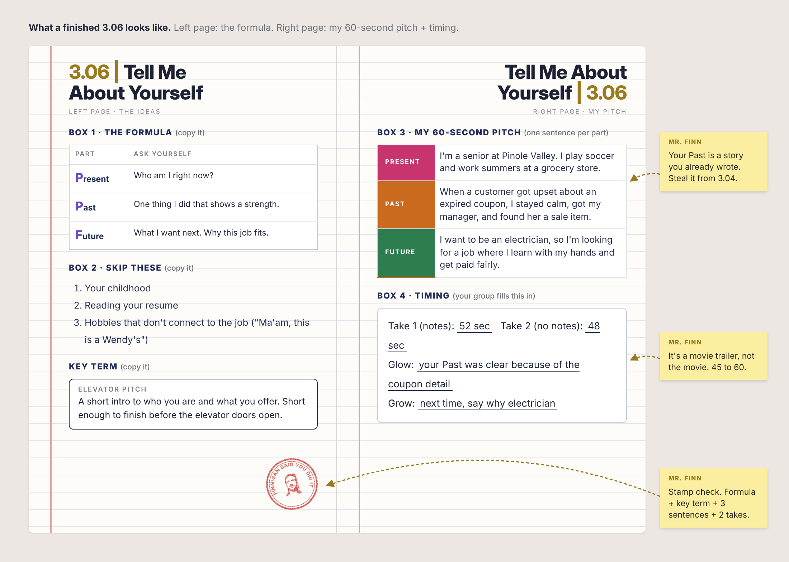

3.06 | Tell Me About Yourself
Purpose
Almost every interview opens with "Tell me about yourself."
It's not your life story. It's a 60-second movie trailer.
Today you write yours and say it out loud.
What a Finished Notebook Looks Like
Click the image to see it full size.

I. The Formula
| Part | Ask yourself |
|---|---|
| Present | Who am I right now? |
| Past | One thing I did that shows a strength. |
| Future | What I want next. Why this job fits. |
Skip these: your whole life story, reading your resume out loud, "Um, I don't know, I'm chill."
Mr. FinnI’ve spent the better part of the last 15 years working in K-12 education, with some stints in carpentry and event planning along the way.
I found the lifestyle of a gigging musician required some flexibility with timing, which is why subbing was such a good fit. Eventually I grew tired of staying up late in clubs and started enjoying the work of a teacher more, so I ended up getting an MAT and doing my field work within the IB department at Berkeley High. After that I did a year of hard time teaching 8th grade English at Piedmont Middle, and I’ve been here at Pinole Valley since. Now I’m co-chair of the department.
For my next trick, I want to get back to my roots teaching IB English. Here’s why: IB takes the concept of literacy and stretches it beyond what you’d expect in a typical high school English Lit course. We studied film, art, media, music and lyrics, along with the more conventional formats: scholarly articles, poetry, fiction and nonfiction.
II. Write It
- One sentence for each part: Present, Past, Future.
- Past: steal a story from your 3.04 drafts.
- Future: your #1 from 3.03 can help.
III. Say It
- Partner times you on a phone.
- Try 1: read it from your notebook.
- Try 2: notebook closed.
- Partner writes both times, one glow, one grow. Then switch.
Success Looks Like
- Formula copied
- 3 sentences: Present, Past, Future
- 2 times, a glow and a grow from your partner